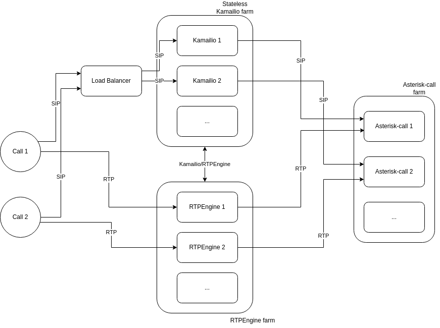
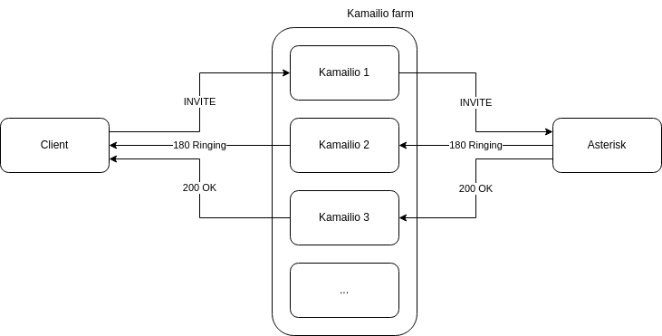
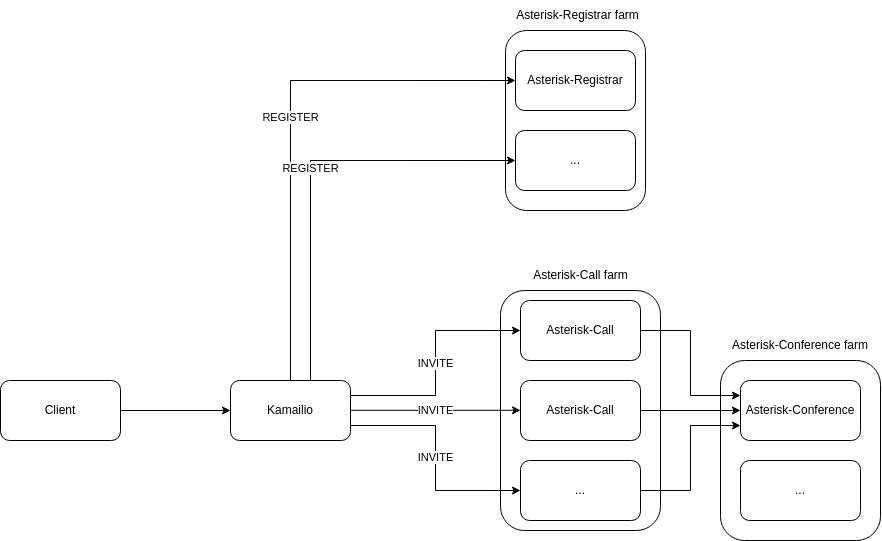
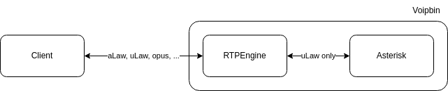
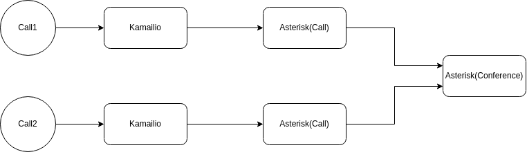
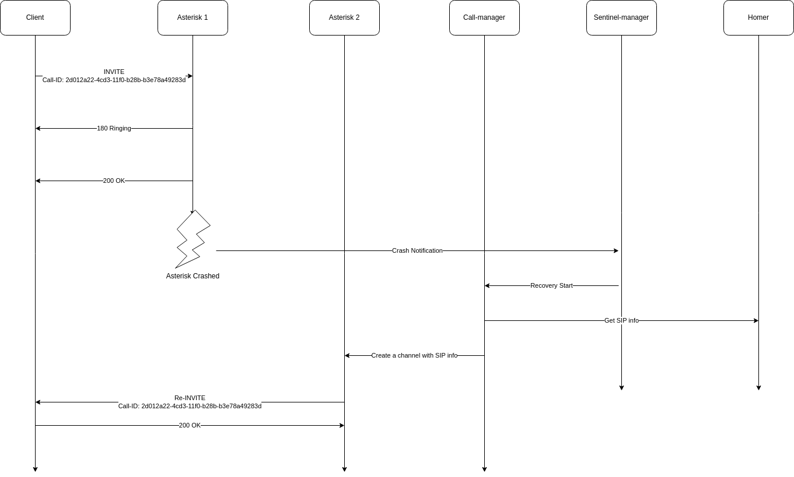
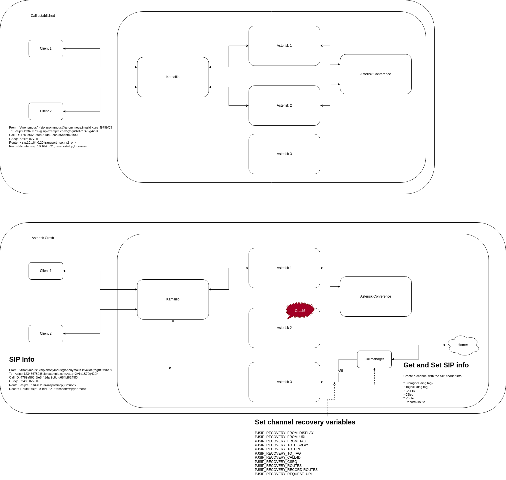

Real-Time Communication (RTC)¶
Note
AI Context
This page describes VoIPBIN’s real-time communication stack: Kamailio (stateless SIP edge routing), Asterisk (three specialized farms for calls, conferences, and registration), RTPEngine (media proxy and codec transcoding), conference architecture, and SIP session recovery after Asterisk crashes. Relevant when an AI agent needs to understand VoIP call flow mechanics, media handling, codec strategies, or high-availability features.
VoIPBIN’s RTC architecture handles all real-time voice and video communication through a distributed stack of specialized components. The architecture separates signaling (SIP) from media (RTP) processing, enabling independent scaling and fault tolerance.
VoIP Stack Overview¶
VoIPBIN’s VoIP stack consists of three main components working together:
Full SIP Signaling Topology:
+------------------+
| SIP/WebRTC |
| Client |
+--------+---------+
| INVITE / RE-INVITE / 200 OK
v
+------------------+
| External |
| Load Balancer | <-- Internet-facing edge
| (Signal GW) |
+--------+---------+
| Distributes to Kamailio Farm
v
+--------------------------------------------+
| Kamailio Farm |
| (Kamailio 1 / Kamailio 2 / ...) |
| |
| o Dispatcher module for |
| inter-Kamailio balancing |
| o Single slot -> Internal Asterisk LB |
| (no per-Asterisk entries) |
+------+--------+----------------------------+
| | ^
|INVITE |RE-INVITE | 200 OK / 200 OK(RE-INVITE)
|(new |(in-dialog, |
|dialog) |Route header, |
| |bypasses LB, |
| |direct to |
| |Asterisk(X)) |
v | +----------+----------+
+----------+ | | Internal |
| Internal | | | Kamailio LB |
| Asterisk | | +---------------------+
| LB | | ^
+-----+----+ | |
| v |
| +------------------+ |
+-->| Asterisk Farm +-------+
| (Call PBX) | Responses sent to
+------------------+ Internal Kamailio LB

Key Characteristics:
Stateless SIP Proxies: Kamailio instances maintain no state, enabling dynamic scaling
Distributed Media Processing: RTPEngine handles all media transcoding and routing
Separated Concerns: Signaling (Kamailio) and media (RTPEngine, Asterisk) are independent
Zero-Downtime: Load balancer redirects traffic when instances fail
Horizontal Scaling: Add more instances of any component to handle increased load
Dispatcher-Based Kamailio Distribution: Kamailio instances use the built-in dispatcher module to balance traffic across the farm
Single-Slot Asterisk Routing: Kamailio routes to Asterisk via a single dispatcher slot pointing to the Internal Asterisk LB – not individual Asterisk addresses
Bidirectional Decoupling: Asterisk sends responses to the Internal Kamailio LB, not to individual Kamailios. Neither side knows the other’s instance list, enabling independent scaling of both farms at any time
Traffic Flow:
Inbound Signaling: External Load Balancer distributes incoming SIP traffic to the Kamailio Farm
New Call Routing: Kamailio forwards new INVITEs to the Internal Asterisk LB (single dispatcher slot), which distributes to the Asterisk Farm
RE-INVITE Routing: Kamailio routes in-dialog RE-INVITEs directly to the specific Asterisk instance using the Route header established during dialog setup, bypassing the Internal Asterisk LB entirely
Response Path: Asterisk sends responses (200 OK) to the Internal Kamailio LB, which distributes to any Kamailio instance
Media Setup: RTPEngine handles RTP media streams and codec transcoding
Call Control: Asterisk manages call state and conference bridges
This modular design ensures VoIPBIN can provide reliable, scalable VoIP services while accommodating high traffic loads.
Note
AI Implementation Hint
VoIPBIN uses ulaw (G.711) as the exclusive internal codec. All external codecs (G.722, Opus, etc.) are transcoded at the edge by RTPEngine. When integrating SIP endpoints, any standard codec is accepted, but for lowest latency configure your SIP client to prefer G.711 ulaw to avoid transcoding overhead.
Kamailio - SIP Edge Router¶
Kamailio is an open-source SIP server providing the edge routing layer for all SIP traffic.
Official Site: https://www.kamailio.org/
Role in VoIPBIN:
Kamailio acts as the stateless SIP proxy and edge router, responsible for:
SIP Routing: Forwarding SIP messages to appropriate backend services
Load Distribution: Balancing traffic across Asterisk instances
Authentication: Validating SIP registration credentials
Protocol Handling: Managing SIP message parsing and routing
Dispatcher Module -- Kamailio Load Balancing:
External LB
|
| Distributes SIP traffic
v
+-----------+ +-----------+ +-----------+
| Kamailio 1| | Kamailio 2| | Kamailio 3| ...
+-----------+ +-----------+ +-----------+
| | |
+---------------+---------------+
|
Dispatcher module: single slot
|
v
+------------------+
| Internal |
| Asterisk LB |
+------------------+
|
v
+------------------+
| Asterisk Farm |
+------------------+
Note: Different Kamailio instances handle different messages
in the same dialog (stateless operation).
No Kamailio config change needed when Asterisk pods scale.

Key Features:
Dispatcher Module: Uses Kamailio’s built-in dispatcher for load balancing. Routes new calls to the Internal Asterisk LB via a single slot – no per-Asterisk entries needed
Load Balancing: Distributes incoming SIP traffic across multiple instances
Stateless Operation: No state maintained, enabling dynamic scaling and failover
High Availability: Instances can be added or removed without affecting ongoing calls
Fast Performance: C-based implementation with minimal overhead
Decoupling and Independent Scaling¶
The combination of the dispatcher module and the single-slot Asterisk routing creates a bidirectionally decoupled architecture:
Kamailio -> Asterisk:
+---------------------+ +------------------+
| Kamailio Farm | | Internal |
| (dispatcher module) +-------->| Asterisk LB |
| | one +--------+---------+
| No per-Asterisk | slot |
| entries needed | v
+---------------------+ +------------------+
| Asterisk Farm |
| (scale freely) |
+------------------+
Asterisk -> Kamailio:
+------------------+ +------------------+
| Asterisk Farm +-------->| Internal |
| | sends | Kamailio LB |
| No per-Kamailio | here +--------+---------+
| entries needed | |
+------------------+ v
+------------------+
| Kamailio Farm |
| (scale freely) |
+------------------+
Result:
Add or remove Asterisk pods – no Kamailio dispatcher config change required
Add or remove Kamailio instances – no Asterisk config change required
Both farms can be scaled independently at any time without coordination
RE-INVITE and Within-Dialog Routing¶
For requests within an established SIP dialog (such as RE-INVITE for media renegotiation or hold/resume), VoIPBIN uses a direct routing strategy that bypasses the Internal Asterisk LB entirely.
Why direct routing matters:
When an INVITE creates a new dialog, Asterisk records its own address in the SIP
Record-Route header returned to the client. All subsequent in-dialog requests
(RE-INVITE, BYE, etc.) carry a Route header derived from this value, pointing
directly to the specific Asterisk instance that owns the dialog.
Kamailio reads this Route header and forwards the request straight to that
Asterisk instance – skipping the Internal Asterisk LB completely.
New INVITE (dialog setup):
Client -> External LB -> Kamailio(any)
-> Internal Asterisk LB -> Asterisk(X)
|
Records own address
in Record-Route header
RE-INVITE (within dialog):
Client -> External LB -> Kamailio(any)
-> Asterisk(X) directly <-- Route header bypasses LB
(correct instance, guaranteed)
Benefits:
Dialog integrity: RE-INVITE always reaches the Asterisk that owns the session
No stateful proxy needed: Kamailio remains fully stateless – it just reads the Route header
No coordination: Neither the LB nor Kamailio needs to track which Asterisk owns which dialog
Independent scaling: Adding or removing Asterisk pods during live calls does not affect existing dialogs
Note
AI Implementation Hint
When integrating SIP endpoints, ensure your SIP stack correctly handles the
Record-Route and Route headers returned by VoIPBIN. Most standard SIP
libraries (PJSIP, Sofia-SIP, etc.) handle this automatically. Do not strip or
modify these headers, as doing so will cause RE-INVITEs to be routed to the
wrong Asterisk instance.
Asterisk - Media and Call Processing¶
Asterisk is an open-source communications platform providing comprehensive telephony services.

VoIPBIN’s Three Asterisk Farms:
VoIPBIN employs three specialized Asterisk farms for optimized scalability and fault isolation:
Asterisk Farm Architecture:
+---------------------------------------------------------+
| Kamailio Farm |
+------+-------------------------------------+------------+
| |
| All Calls | Registrations
v Conferences v
+-------------+ +-------------+ +-------------+
| Asterisk | | Asterisk | | Asterisk |
| Call | | Conference | | Registrar |
| Farm | | Farm | | Farm |
| |--->| | | |
| o 1:1 calls | | o N-way | | o SIP |
| o Call | | conference| | REGISTER |
| bridging | | o Mixing | | o Auth |
| o Transfers | | o Recording | | o Presence |
+-------------+ +-------------+ +-------------+
1. Asterisk-Call Farm
Handles 1:1 call processing:
Call setup and teardown
Media bridging between two parties
Call transfers and forwarding
DTMF processing
Call recording
2. Asterisk-Conference Farm
Manages multi-party conference calls:
Conference bridge creation and management
Participant mixing (up to hundreds of participants)
Conference recording
Participant management (mute, kick, etc.)
Audio/video conferencing
3. Asterisk-Registrar Farm
Handles SIP registration:
User authentication
Registration lifecycle management
Presence information
Contact database
Farm Benefits:
Independent Scaling: Scale each farm based on specific load patterns
Fault Isolation: Issues in one farm don’t affect others
Optimized Configuration: Each farm can be tuned for its specific workload
Targeted Upgrades: Update farms independently without full system downtime
Inter-Farm Communication:
While farms operate independently, Asterisk-Call and Asterisk-Conference communicate when bridging calls into conference sessions, enabling seamless transitions from 1:1 calls to conferences.
RTPEngine - Media Proxy and Transcoding¶
RTPEngine is an open-source media proxy providing RTP processing and transcoding capabilities.

Role in VoIPBIN:
RTPEngine serves as the codec edge server and media proxy:
Codec Transcoding:
External Client VoIPBIN Internal
(Various Codecs) (ulaw only)
| |
| RTP (G.722, Opus, etc.) |
v v
+---------------------------------------------+
| RTPEngine Farm |
| |
| o Transcode external -> ulaw (internal) |
| o Transcode ulaw (internal) -> external |
| o NAT traversal |
| o Packet switching |
| o SRTP/RTP conversion |
+------------------+--------------------------+
|
| RTP (ulaw)
v
Asterisk Farm
Responsibilities:
Codec Transcoding: Convert between external codecs and internal ulaw
NAT Traversal: Handle media through NAT and firewalls
SRTP Support: Encrypt/decrypt media streams
Packet Routing: Efficient RTP packet switching
Load Distribution: Distribute media processing across instances
Internal Codec Strategy:
Internal: VoIPBIN uses ulaw codec exclusively for all internal communication
External: Clients can use any supported codec (G.711, G.722, Opus, etc.)
Edge Transcoding: RTPEngine performs all transcoding at the edge
Performance: Internal ulaw ensures minimal CPU overhead for media processing
This edge transcoding strategy ensures optimal internal performance while supporting diverse client codecs.
Conference Architecture¶
VoIPBIN’s conference functionality is powered by the dedicated Asterisk-Conference farm.

Conference Design:
VoIPBIN leverages a dedicated Asterisk-Conference component for all conference calls:
Advantages:
Isolation and Scalability: Conference processing separated from regular calls ensures stable service
Independent Scaling: Conference farm scales based on conferencing usage patterns
Centralized Management: All conference operations managed in one place
Fault Isolation: Conference issues don’t impact regular call processing
Conference Flow¶
Conference Lifecycle:
Flow Manager Asterisk-Conf Conference Bridge
| | |
| 1. Create Conf | |
+----------------->| |
| | 2. Create Bridge |
| +------------------->|
| | |
| 3. Add Part. 1 | |
+----------------->| 4. Join Bridge |
| +------------------->|
| | |
| 5. Add Part. 2 | |
+----------------->| 6. Join Bridge |
| +------------------->|
| | |
| | [Audio Mixing] |
| |<------------------>|
| | |
| 7. End Conf | |
+----------------->| 8. Destroy Bridge |
| +------------------->|
| | |
Conference Steps:
Call Initiation: Flow Manager requests conference creation (via “connect” or “conference_join” action)
Conference Establishment: Asterisk-Conference creates dedicated bridge for participants
Participant Joining: Participants added to bridge sequentially or simultaneously
Conference Interaction: Participants communicate with voice/video, screen sharing, etc.
Conference Termination: Bridge destroyed when conference ends or all participants leave
Conference Features:
Audio and video mixing
Recording capabilities
Dynamic participant management
Mute/unmute controls
Moderator capabilities
Entry/exit tones
1:1 Calls as Conferences¶
VoIPBIN treats 1:1 calls as special cases of conferencing with only two participants:
1:1 Call = Conference with 2 Participants
+--------------+ +--------------+
| Participant A| | Participant B|
+------+-------+ +------+-------+
| |
| Conference Bridge |
| (2 participants) |
+-----------+------------+
|
Asterisk-Call
(manages bridge)
Benefits of Unified Approach:
Simplified Development: Same infrastructure for 1:1 calls and conferences
Enhanced Flexibility: Seamless transitions from 1:1 to multi-party conferences
Improved Resource Utilization: Optimized resource allocation across all call types
Consistent Features: Same feature set available for all call types
Easier Maintenance: Single codebase for all call scenarios
Example Transition:
1:1 Call -> Multi-Party Conference:
Initial State: Add 3rd Party: Result:
+-----+ +-----+ +-----+ +-----+ +-----+ +-----+
| A |--| B | | A |--| B | | A |--| B |
+-----+ +-----+ +-----+ +-----+ +-----+ +-----+
| |
| |
v v
+-----+ +-----+
| C | | C |
+-----+ +-----+
2-participant bridge Add participant 3-participant bridge
(1:1 call) without disruption (conference)
SIP Session Recovery¶
VoIPBIN provides SIP session recovery to maintain active SIP sessions even when an Asterisk instance crashes unexpectedly. This feature prevents call drops, conference exits, and media failures by making the client perceive the session as uninterrupted.
How It Works¶
When an Asterisk instance crashes, all SIP sessions managed by that instance disappear immediately. Without a BYE message, clients experience unexpected termination. VoIPBIN recovers sessions through an automated process:
Session Recovery Flow:
Asterisk-1 Client Sentinel Call-manager HOMER DB Asterisk-2
| | | | | |
| Active | | | | |
| Session | | | | |
|<----------->| | | | |
| | | | | |
X CRASH | | | | |
| | | | |
| Detect Crash | | |
| | | | |
| Publish Crash event | | |
| +------------->| | |
| Query Sessions | |
| Get SIP Headers | |
| |<--------+ |
| | |
| Create Channels |
| +--------------------->|
| |
| |
| |
| Send Recovery INVITE |
|<--------------------------------------------------+
| |
| 200 OK (same Call-ID) |
+-------------------------------------------------->|
| |
Session | |
Recovered | |
|<------------------------------------------------->|

Detailed Steps¶
1. Crash Detection
The sentinel-manager quickly detects abnormal termination of an Asterisk instance.
2. Session Lookup
The internal database is queried to retrieve all active sessions from the failed instance.
3. SIP Field Collection (via HOMER)
The HOMER SIP capture API provides SIP header information:
Call-ID
From/To headers and tags
Route headers
CSeq values
Other SIP state information
4. Create SIP Channels on Another Asterisk
A healthy Asterisk instance is selected and new SIP channels are created with original session information.
5. Set Recovery Channel Variables
Channel variables are set to ensure the new INVITE appears as continuation:
PJSIP_RECOVERY_FROM_DISPLAY
PJSIP_RECOVERY_FROM_URI
PJSIP_RECOVERY_FROM_TAG
PJSIP_RECOVERY_TO_DISPLAY
PJSIP_RECOVERY_TO_URI
PJSIP_RECOVERY_TO_TAG
Call-ID, CSeq, Routes (preserved from original session)
6. Send Recovery INVITE
The INVITE reuses the original Call-ID and tags, so the client interprets it as a re-INVITE within the existing session.
7. Restore RTP and SIP Sessions
Signaling and media are fully re-established, restoring the call to its previous state.
8. Resume Flow Execution
The recovered session resumes Flow execution from before the crash:
Active Calls: Conversation continues without interruption
Conferences: User reconnected to same conference bridge
Call State: All call variables and state restored
Asterisk Patch for Recovery¶
VoIPBIN patches Asterisk’s PJSIP stack to override SIP header fields based on channel variables:

Patch Implementation:
This patch allows a newly created SIP channel to impersonate the original one, making the recovery INVITE appear as a legitimate continuation:
// Extract recovery variables from channel
val_from_display_c_str = pbx_builtin_getvar_helper(session->channel, "PJSIP_RECOVERY_FROM_DISPLAY");
val_from_uri_c_str = pbx_builtin_getvar_helper(session->channel, "PJSIP_RECOVERY_FROM_URI");
val_from_tag_c_str = pbx_builtin_getvar_helper(session->channel, "PJSIP_RECOVERY_FROM_TAG");
val_to_display_c_str = pbx_builtin_getvar_helper(session->channel, "PJSIP_RECOVERY_TO_DISPLAY");
val_to_uri_c_str = pbx_builtin_getvar_helper(session->channel, "PJSIP_RECOVERY_TO_URI");
val_to_tag_c_str = pbx_builtin_getvar_helper(session->channel, "PJSIP_RECOVERY_TO_TAG");
// Call-ID, CSeq, Routes, and other headers are handled similarly
// Override PJSIP headers with recovery values
Full Patch:
The complete implementation is available on GitHub:
Recovery Guarantees:
Transparent to Client: Client sees normal re-INVITE, no indication of crash
State Preservation: All call state and variables restored
Media Continuity: Audio/video streams resume without gaps
Flow Continuity: Call flow resumes at exact point before crash
Kamailio Proxy - Provider Health Monitor¶
The Kamailio Proxy is a lightweight Go sidecar service that runs alongside each Kamailio instance. It is not in the SIP signaling path – no call traffic passes through it. Its sole responsibility is provider health monitoring.
Position in Architecture:
+------------------+ +--------------------+ +--------------------+
| Kamailio | | Kamailio Proxy | | PSTN Provider |
| (SIP signaling) | | (management only) | | (Trunk / Carrier) |
| | | |---->| |
| Handles INVITE, | | o Sends SIP | | Responds to SIP |
| RE-INVITE, etc. | | OPTIONS to PSTN |<----| OPTIONS probes |
| | | providers | | (or times out) |
+------------------+ +--------------------+ +--------------------+
|
| Health status
v
+--------------------+
| bin-route-manager |
| (skips unhealthy |
| providers when |
| routing calls) |
+--------------------+
How it works:
bin-route-managerperiodically requests a health check for each configured providerKamailio Proxy sends a SIP
OPTIONSrequest to the providerThe provider responds (or times out)
Kamailio Proxy reports the health result back to
bin-route-managerRoute manager marks the provider healthy or unhealthy accordingly
Outbound calls avoid unhealthy providers until they recover
Key characteristics:
Sidecar deployment: One Kamailio Proxy per Kamailio instance
No SIP traffic: Does not proxy or route any call signaling
On-demand active probes: Sends SIP OPTIONS to each provider when triggered by bin-route-manager
Tight coupling with route-manager: Designed specifically for
bin-route-managerintegration
This sidecar design keeps provider health monitoring fully decoupled from SIP call signaling, ensuring that health probe traffic never affects call quality or latency.